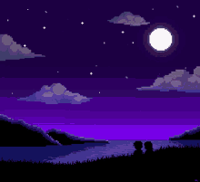

DESCRIPCION
En 'Good Nightmare Sweetie' tomarás el papel de Otis, un bebé capaz de entrar en el mundo de los sueños,que se encontraba en calma hasta que las pesadillas se hicieron con el control, impidiendo a la gente conciliar el sueño. Otis, con los poderes que adquiere en este mundo, deberá plantar cara a todas las calamidades con las que se cruce a su paso para conseguir despertar y salvarse.
